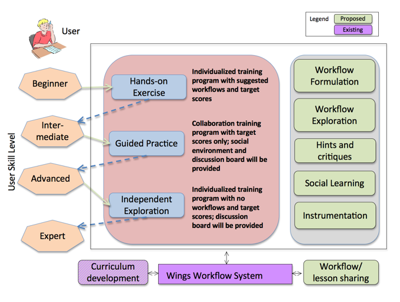

|
Main
Description
Status
Research
Publications
Demo
People
Funding
Links
|
Research
We plan to extend DALE so that end users will be able to acquire advanced analytic skills through practice in several domains of broad interest. DALE will provide three levels of training:
- Hands-on exercises: In this training level, we plan to provide guided lessons in three domains to teach users how to conduct rigorous data analytics tasks. More specifically, we select analytic tasks from three domains, i.e. text categorization, recommender systems and regulatory network discovery in computational biology, as examples. In each domain, we select 2-3 datasets in which the system provides detailed task description, a target score that the user should aim to achieve at the end of the lesson, and a suggested abstract workflow. The goal of the user is to achieve the target score (or higher scores) by exploring different algorithms and settings within the suggested workflow. The user is expected to be able to understand the basic components of the data analytic workflow and their contribution to the quality of the solution in terms of the target score in each task.
- Guided Practice: The second level of our training program is to provide guided practice. In this program, we will provide the analytic task, its associated dataset and the target score. In contrast to Hands-on Exercises, the system will not provide a suggested workflow but rather will allow the user to use any workflow defined in all lessons of that domain. The goal of this program is to train users to work relatively independently on analytic tasks and seek best solutions.
- Independent Exploration: The third level of our training program is to provide a supportive environment for users to explore analytic tasks with data of his/her interest. DALE has a flexible architecture so that (1) the user can easily create different workflows and run them on their own datasets; (2) the user can write his/her own learning algorithms, or preprocessing algorithms and easily add them to the system as workflow components. DALE will significantly shorten the effort needed for the users to explore different workflows for their data of interest.
The diagram below shows an overview of the DALE framework as we envision it in the future. A user at any skill level can benefit from using DALE. Users will be able to learn machine learning skills by starting from a beginner on data analysis, moving to intermediate level after hands-on exercises and to the expert level after several rounds of independent exploration. On the backend, DALE will consist of manual workflow formulation and exploration, generation of hints and critiques, and social learning capabilities.

|